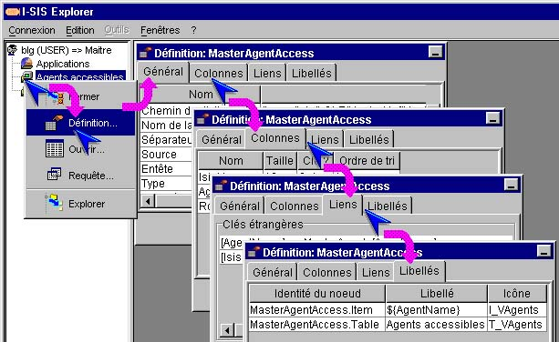

I-SIS Explorer

Guide d'utilisation
|
|
I-SIS Explorer |
|
|
Guide d'utilisation |
||
Toute table I-TOOLS est décrite par un fichier de définition, aussi appelé dictionnaire. Le dictionnaire d'une table est consultable via la méthode "Définition..." du menu contextuel.
Pointez un nœud table,
Affichez son menu contextuel avec le bouton droit de la souris,
Cliquez "Définition..." (),
Une fenêtre affiche les paramètres du fichier de définition sur le premier volet "Général",

Cliquez ensuite les onglets "Colonnes", "Liens", "Libellés" pour afficher les définitions des champs de la tables, celles de ses clés étrangères, celles des libellés et icônes pour le nœud table et les nœuds lignes.
Copyright © 2003 BV Associates. Tous droits réservés.